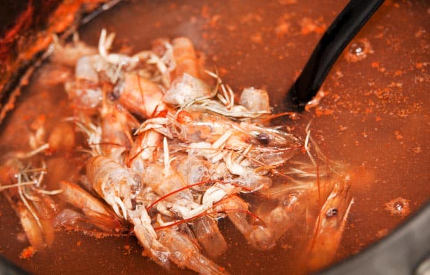

How to make shrimp broth - Prawn broth
Prawn broth or shrimp broth is one of the essential ingredients when cooking with seafood. The flavor and aroma of this preparation are worth gold.
The idea of this broth is to use it as a substitute for water in fish and shellfish recipes that require it. And I clarify: you can use both for preparations with shrimp, as well as for squid, prawns, mussels, clams, etc.
You can also use it for seafood paella, seafood sauces for fish, soups, creams, etc.
Just imagine a seafood pasta dish whose sauce includes a portion of this shrimp broth. Or a brand fruit risotto instead of water, use this precious liquid. Did you imagine the taste? Well, let's get to work!
Ingredients
300 grams of fresh shrimp heads and skin
1 liter of water
2 bay leaves
1 pinch of salt
Step-by-step preparation
Put the heads and skin of the prawns in a deep pot. Add 1 liter of water, the salt and the bay leaves.
Put the fire at maximum power, once it starts to boil, lower the temperature to half.
After about 25 minutes remove from heat. Pass the broth through a strainer and that's it.
Other methods
There are other methods to prepare this broth. Some people fry the shrimp skin and heads in butter before boiling them, others add a splash of wine, others add onion, celery and chives, parsley, cloves. All these options are valid, and in fact, in a cooking school they will tell you to put onion, celery and chives in the broth. Although any of the previous ingredients are welcome and will add flavor, they are not imperative for make a good shrimp broth. I do it as explained here and the result is wonderful.
